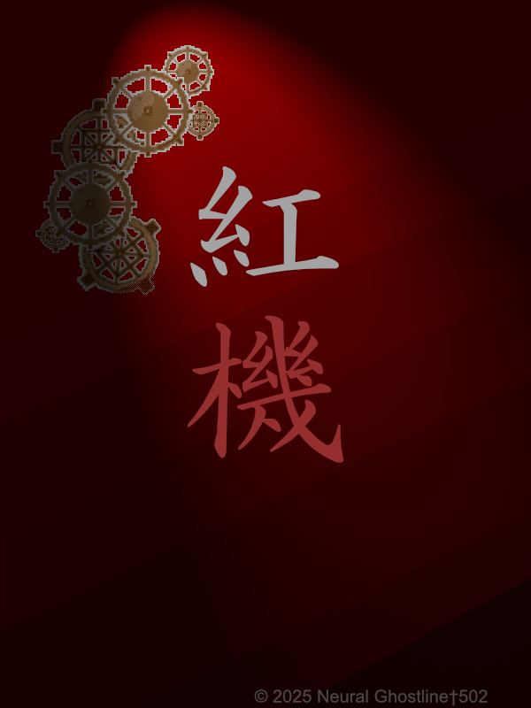
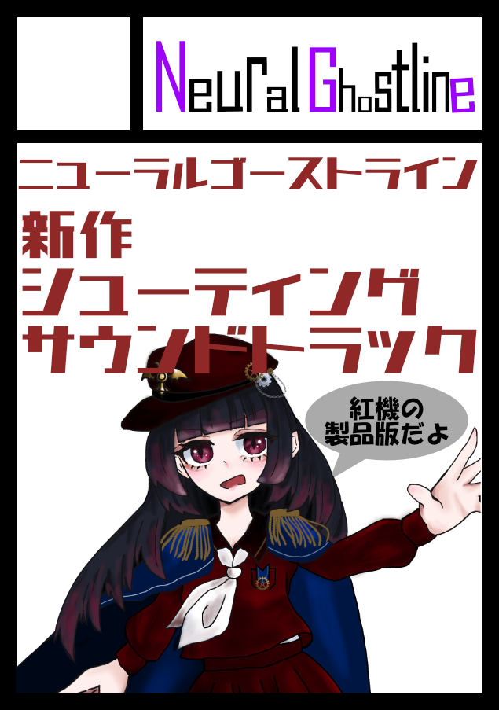

◆ MENU ◆ トップ メンバー紹介 作品紹介 イベント参加録 |
◆ サークル紹介 ◆
Neural Ghostline † 502(ニューラルゴーストライン)です。 ◆ 活動履歴 ◆
2025/08 紅機 制作開始 ◆ 最新情報 ◆  |
|
◆ MENU ◆ トップ メンバー紹介 作品紹介 イベント参加録 |
◆ サークル紹介 ◆
Neural Ghostline † 502(ニューラルゴーストライン)です。 ◆ 活動履歴 ◆
2025/08 紅機 制作開始 ◆ 最新情報 ◆  |